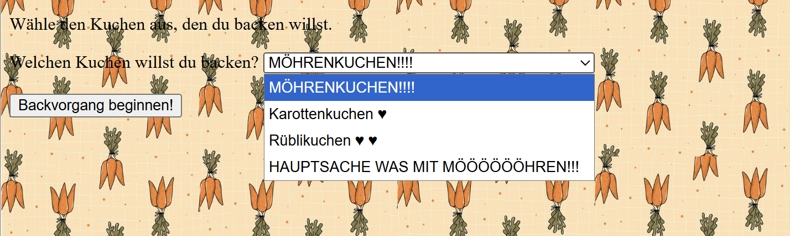
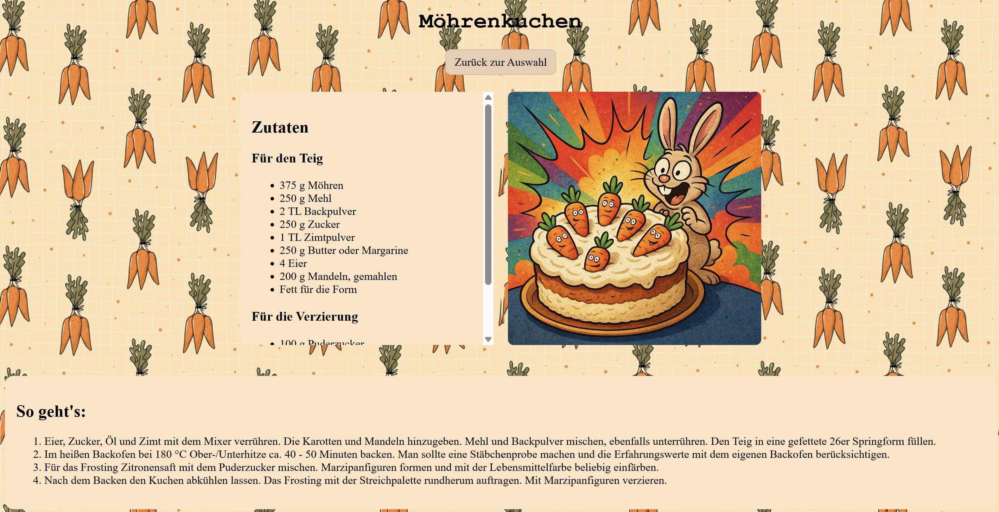

digitale grundlagen
DOKUMENTATION
Lena Buchmann
Gorch-Fock-Str.7
38104 Braunschweig
l.buchmann@hbk-braunschweig.de
Matrikelnummer: 80302
1.4 — first website
Making my first own website was fun. I stole a cake recipe from the internet, let AI create a stupid image for me, and went to play. Just see what I could do. You can choose which cake you want to bake — and what is life, if not the illusion of choice?

